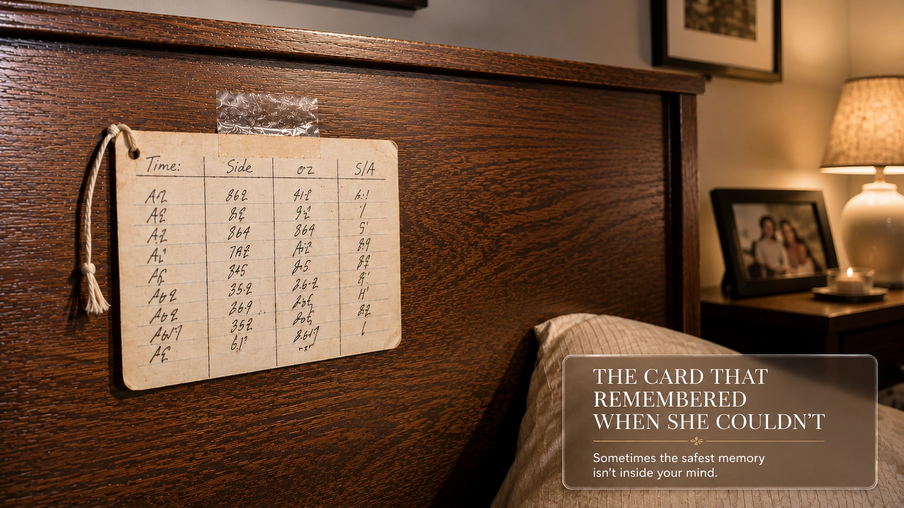

Three-forty in the morning, and Priya is doing math she's done a thousand times, except the numbers won't hold still.
Twenty minutes. Or two hours and twenty. The two answers sit in her with identical weight — the flannel under her arm, the exact way Zara's fist had opened against her collarbone before she drifted off — and there is nothing in her that can tell them apart. Not a gap. Not a blank. Two full memories, occupying the same twenty square feet of bedroom, refusing to sort themselves by time.
She is holding an empty bottle. She does not know if she is about to use it, or if she just did.
Twelve Years
Twelve years on a NICU floor will teach you exactly one thing about memory, and it isn't to trust it. Priya has trained forty-one new grads, every one of them arriving in August wide-eyed and overconfident, and she has broken every one of them of the same belief within a month: that being careful is a feeling you can rely on. It isn't. She reads a label out loud before she reads a syringe not because she doubts herself in the moment, but because she has watched, over and over, what the version of herself doubts later — at hour eleven of a double, at three in the morning, when confidence and correctness have nothing to do with each other anymore. You don't get to be smarter at 4 a.m., she tells them. Nobody does. The system doesn't need you smart. It needs you to check.
She has never given a baby who wasn't hers a dose that wasn't theirs. Twelve years.
She has been standing at this crib for what might be ninety seconds and might be four minutes, holding a bottle, in a dark room, unable to answer the one question her entire professional life has been built around answering for other people's children.
The Word For It
She doesn't tell Marcus that night. She doesn't tell him for three more nights, actually, because telling him means admitting there was a version of the previous week where she genuinely considered feeding Zara again just to be safe — an eleven-day-old stomach, already tender, already unpredictable, taking a second feed because her mother couldn't hold two numbers apart in her head. She knows exactly what that's called, professionally. She's given the in-service on it. Repetition error. She just never once, not in twelve years of saying the phrase out loud to other people, imagined saying it about herself, at home, about her own daughter.
What she does instead, at 2 p.m. the next day, milk-drunk baby dead weight against her sternum, one hand angled at the only tilt that won't wake her: she looks it up. Not because she thinks something's wrong with her. Because she can't leave a mechanism alone once she suspects there's a name for it.
There is. 1998. A journal she's never had reason to open before. Two kinds of error, and the paper's plain enough about which populations get studied for it — not new mothers. Older adults, mostly, and pill bottles. Nobody ran this exact test on a woman eleven days postpartum standing over a crib at 4 a.m. But the shape of the failure is identical enough that she reads the abstract twice, feeling something she doesn't have a clean word for. Not relief, exactly. Recognition wearing relief's clothes.
The Card
Marcus is the one who fixes it, which she'll resent slightly and love enormously for roughly the same nine months.
Not an app — she'd tried two of those in the first forty-eight hours and deleted both, one for making her compare Zara's numbers to some curve of babies who weren't hers, the other for putting a screen between her and an actual sleeping face at 3 a.m., which felt like exactly the wrong trade. What he tapes to the headboard instead is an index card on a string, four columns, his handwriting getting worse by the week. Time. Side. Ounces. One letter — S or A — for what she did after.

It ends the crib-side problem almost immediately. It does not end the thing underneath it. Some nights she catches herself rereading the card longer than she needs to — not checking the information, which she already believes, but checking anyway, the way you'll re-sign a chart you know you already signed, because checking has quietly become its own small ritual, separate from whatever doubt it was built to answer.
"I think I've turned my nightstand into a chart," she tells Deb, another NICU nurse, half-joking, month three. "And some nights I don't know if I'm checking it because I don't trust my brain, or because checking is the only part of any of this that still feels like something I'm good at."
Deb doesn't laugh. "That's not a joke," she says. "That's literally what we tell them a double-check is for. It's not just catching the error. It's what your hands do when the rest of you doesn't know what to do."
What It Costs
Here's the part she likes less, once she starts paying attention to it the way she pays attention to everything now, like a kind of penance for the eleven days she couldn't.
By week six she notices she's stopped trying to feel whether Zara's hungry before checking when the last feed was. The card isn't wrong. It's that some quieter form of knowing has started deferring to it before she's even aware of the handoff. Lying awake one night, she wonders whether she's raising a very well-logged baby alongside a slightly less trusted set of instincts, and whether that's a fair trade, and whether anyone actually asked her to make it, or whether she just backed into it, the way you back into most things at eleven days postpartum.
She asks the pediatrician at the two-month visit, bracing to be told she's overthinking it, which — fair, often is.
She isn't told that. "It's not nothing," the pediatrician says. "But most parents I see who track nothing at all aren't more instinctively bonded. They're just anxious in a way that doesn't leave a paper trail. I'd rather you borrow a card for a few months than not trust yourself for a few months. It comes back. It's not a muscle that gives out from six weeks of help."
Priya doesn't fully believe her. She writes it on the card anyway, in the one corner that isn't a time or a letter. Instinct comes back. — Dr. R.
The Night It Mattered
The night it actually matters, Zara is eleven weeks old, running 100.9, and there's no negotiating that number, no waiting to see. Coat half-buttoned over pajamas in the ER parking lot, the resident asks the two questions that decide everything — last feed, last wet diaper — and Priya, who twenty minutes earlier couldn't have told you with confidence what day it was, answers both without hesitating, because they're sitting on a card in her coat pocket in Marcus's increasingly bad handwriting, and she doesn't have to trust the inside of her own skull to know them.
It isn't a triumphant feeling. It's closer to a checklist doing the small, unglamorous thing checklists are actually for — not making her smarter, not undoing what 4 a.m. does to anyone's brain, just making sure the thing that mattered didn't depend on her being smarter than she had any right to be that night.
Zara has a virus. She's fine by Thursday.
The Fork
First shift back, four months later, training a new grad nineteen years younger than her and just as terrified as Priya was, she draws the same fork on the whiteboard she's drawn every August for a decade. Omission. Repetition. The new grad writes it down like it's new information. For her, it is.
Priya doesn't mention the card taped to her own headboard. It doesn't belong in this room — a room where checking is a job with rules and a witness and a signature at the bottom, not one woman deciding, alone, in the dark, what she's still allowed to trust about her own mind.
But walking to the next bed, she thinks: it's the same fork it always was. I just didn't know, until eleven days into being someone's mother, that I was standing on the wrong side of it too.
Community
Join the Conversation
Does this story ring true for you? Share your own experience below.
Sign in with GitHub to join the public discussion.
🙌 No account needed — just share your thoughts below.
Thanks — your comment has been submitted and will appear here once reviewed.
Something went wrong submitting your comment. Please try again in a moment.